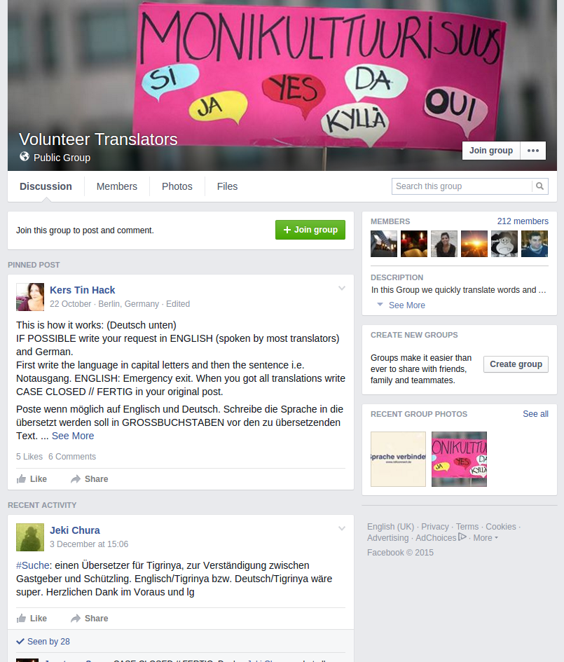
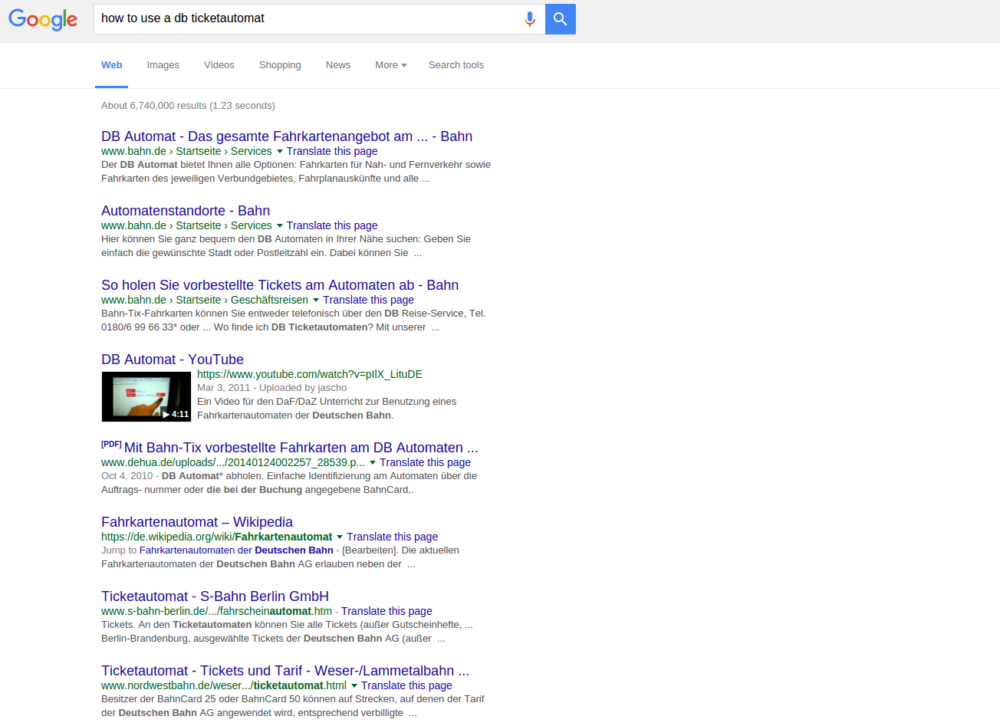
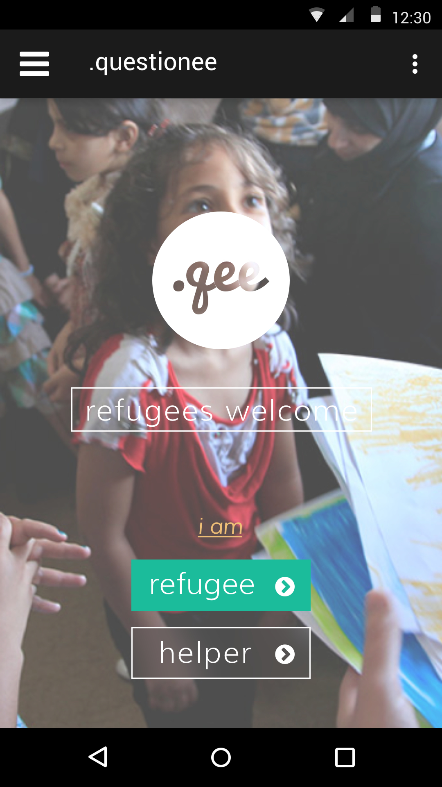
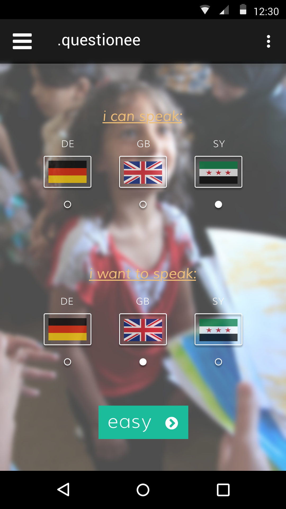
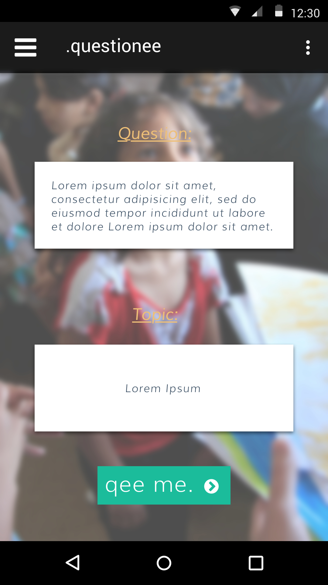
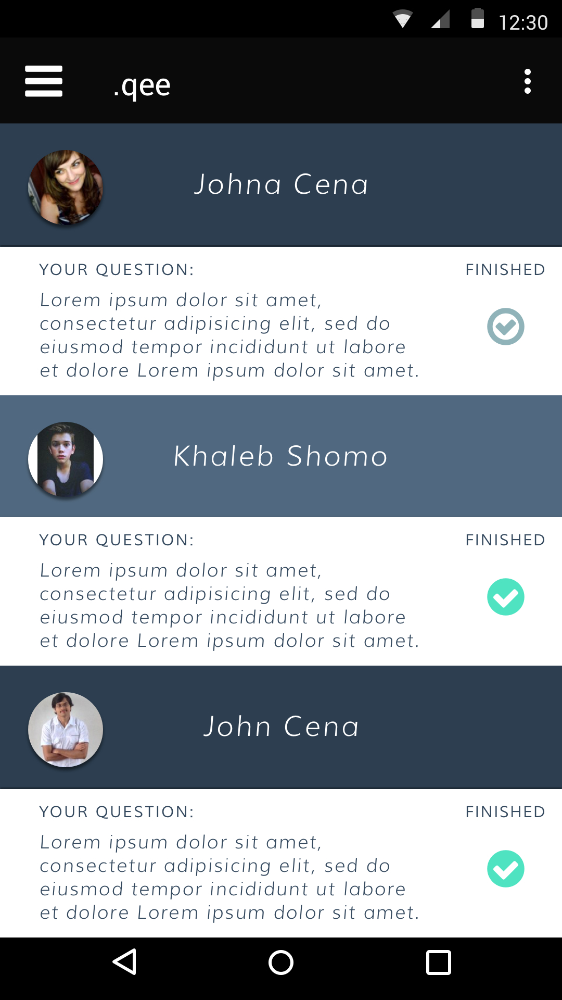
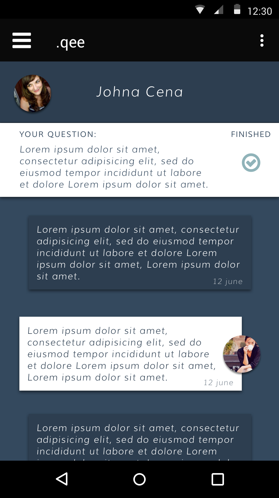
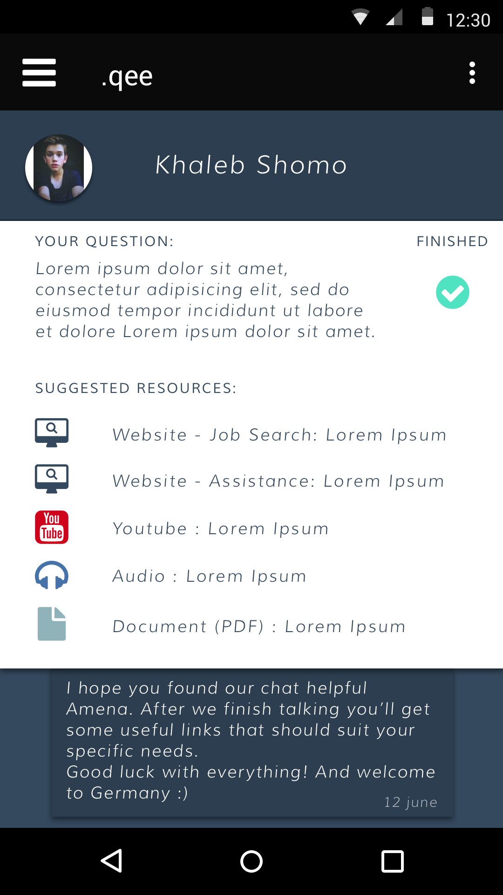
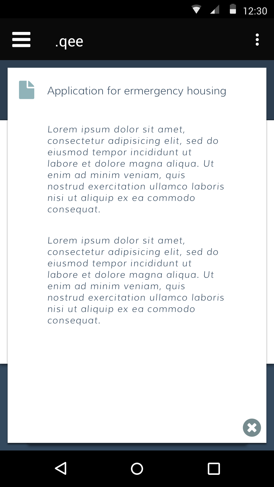

What's the problem?
-
Finding solutions to one's daily problems is often impersonal and tedious (image of list of results on google)
-
Big groups are often hard to navigate
-
How can we improve on the process of finding help and distributing links and information which helped in answering questions ?
-
How do we connect people that want to quickly help (in between meetings)


What's our idea?
-
Platform for questions in native languages
-
Connecting questionee and 'experts' more personally
-
Helper 'owns' a question and is in direct contact







How do we try to solve it?
-
Pool of questions for a given language
-
Document-database which can be used to search docs for help, or even automatically adds them to a conversation
-
People can join and look for open questions in their language
-
People input documents and tag them so they can be used within the system
-
Growing set of tags for documents (types, language, topic, problem etc...)
Where do we see this going?
-
Rating and ranking for documents and answers
-
User login and general savety
-
System generates tags automatically
thanks for your attention
←
→
#